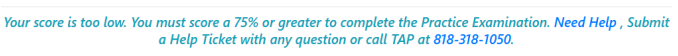
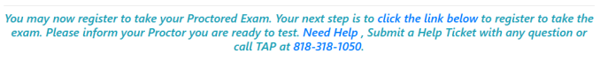
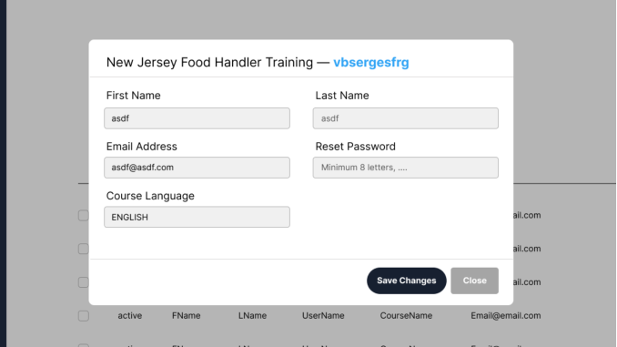
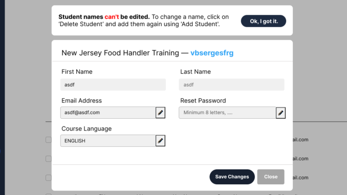

Optimizing Usability & Production Systems
By addressing user pain points and system inefficiencies, we created targeted solutions to enhance the overall user experience, streamline workflows, and ensure better system integrity.
1. Improving Post-Practice Exam Clarity & User Trust
Problem: Users completing the Food Safety Manager training faced unclear next steps after practice exams and frequent login issues when accessing the ANSI proctoring site. This confusion led to certification delays and increased support calls.
The goal was to improve post-exam clarity, guide users based on pass/fail outcomes, and proactively reduce common technical issues during the exam handoff process. Additionally, to create a client-specific version for Albertson’s and Safeway that aligned with their training standards.
First I updated separate messaging flows for fail/pass outcomes with tailored next steps.
Fail Original
Updated

Pass Original
Updated

Both updated pass/fail screens use visual hierarchy to guide user attention; success messages and score outcomes draw the eye, while bolded guidance text and strategically placed links provide clear next steps. Passing users directed to ANSI registration and failing users guided to retake the practice test, with support information separated to reduce cognitive load and clutter
I then added pre-ANSI instructional screen for passing users to prevent common login issues. Taking note of Albertson's/Safeway compliance requirements while maintaining visual consistency with the TAP system.

- Success message confirming training has been completed
- Emphasized vital information with bolded or colored text
- Obvious next-step options
Solution: I redesigned training flow screens to reduce confusion during exam transitions. The updated messaging clarified login steps, decreased support requests, and ensured smoother certification progress.
2. Designing Secure Admin Workflows
Problem: After enrollment, admins found student/employee names were occasionally misspelled or didn't match legal documentation. However, unrestricted name editing posed risks, admins could falsify training completion and bypass certification requirements for newer employees.
The goal here was to design a secure yet flexible system that allows for genuine name corrections while preventing misuse that could compromise the integrity of training records and certifications.
I designed a guided pop-up that replaced direct name editing after enrollment. When admins attempted edits, clear instructions appeared for making changes through proper channels, preventing fraud while allowing legitimate corrections.
Edit Name Before
Updated
Admin Editing Guide
- Pop-up message detailing steps to fix student/employee names
- Icons depicting changeable fields
Solution: A secure correction system that guided admins through proper name change procedures while protecting certification records. Balancing administrative needs with security requirements, ensuring accurate student data without enabling fraudulent modifications.
3. AI-Assisted Email Campaigns & Learning Content
Problem: The marketing team needed to scale email campaigns and generate learning materials more efficiently. Current design-focused to HTML processes were slow and inconsistent, creating bottlenecks in outreach and content development across multiple courses.
The goal was to leverage design systems and AI tools to automate content creation for email campaigns and learning materials, enabling the team to scale outreach and documentation without sacrificing quality or brand consistency.
By incorporating our brand standards and design guidelines, I refined these outputs for clarity and visual consistency. This created an easily accessible system for the marketing team to streamline their weekly email campaigns.
I used ChatGPT's project capabilities to generate structured HTML email templates and course study guides using my HTML coding instructions as a framework.

Solution: An AI-supported workflow that dramatically reduced content generation time while maintaining consistent quality across campaigns. Leveraged ChatGPT to draft HTML email content and educational documents, integrating brand-aligned layouts to ensure cohesive experiences. The repeatable system enabled the marketing team to send over 50,000 emails per week using scalable templates.
Conclusion: Each of these projects contributed to optimizing usability and design by streamlining workflows, enhancing user guidance, and ensuring system integrity. The key achievements included improved user experience, faster issue resolution, automation of administrative tasks, and clear communication of changes or guidance from developers to end-users.